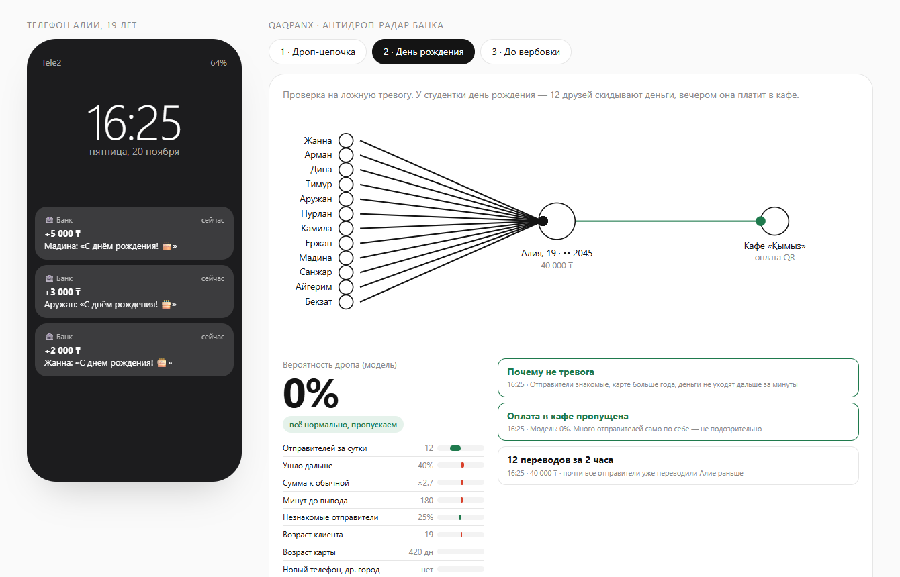
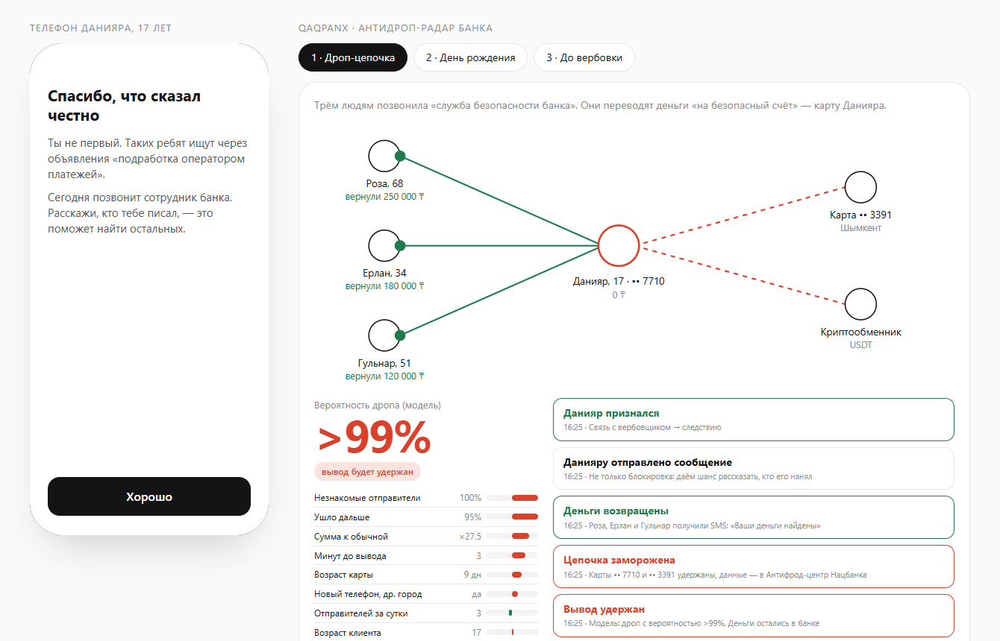

FinTech Case · Банк ЦентрКредит · 2026
Қақпан — капкан. Антидроп-радар, который ломает последнее звено любой мошеннической схемы.
Команда Legion · Кейс: выявление мошенничества
Проблема
Звонок «из банка», фейковый магазин, голос-дипфейк. Украденные деньги всё равно проходят через карту дропа.
02Масштаб в Казахстане · 2 года работы Антифрод-центра
Источник: Национальный Банк РК, июль 2026
03Кто такой дроп
Источник: прокуратура Алматинской обл., gov.kz, 2025
04Что уже есть
30 000+ в сером и 13 000+ в чёрном списке · Нацбанк РК, 2026
05Решение
Модель
Данные синтетические: 10 000 счетов, 3% дропов. На реальных данных банка метрики нужно перепроверить
07Что поняла модель
12 друзей скинули Алие на день рождения → 0%.
Подозрительно, когда все отправители незнакомые и деньги уходят за минуты.

08Прототип
Три сценария:
дроп-цепочка,
день рождения,
до вербовки.
Оценку считает настоящая модель, видно каждый признак.

99%, деньги возвращены, Данияр признался"> 09Польза для банка
Технологии
Пилот
Честно
Спасибо. Готовы показать демо.
14